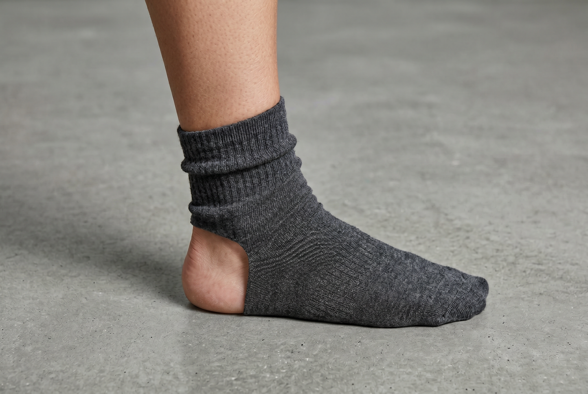
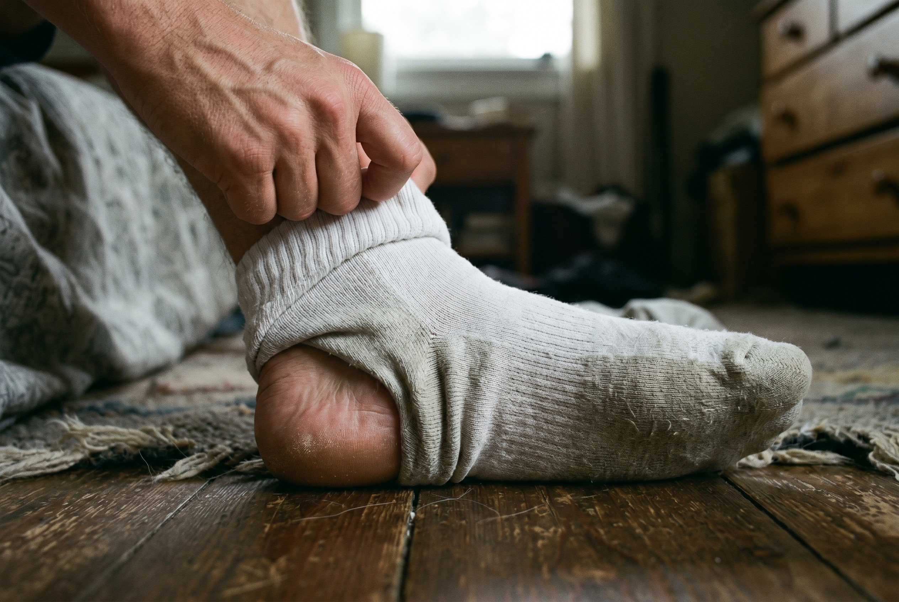
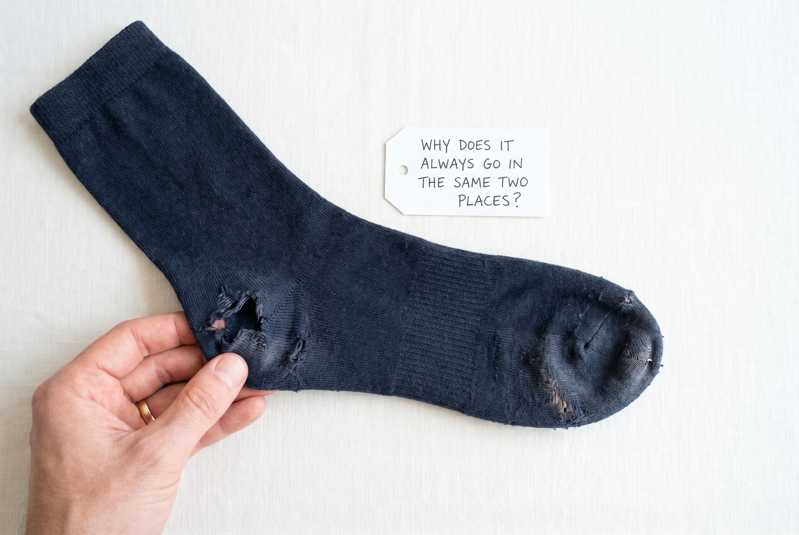
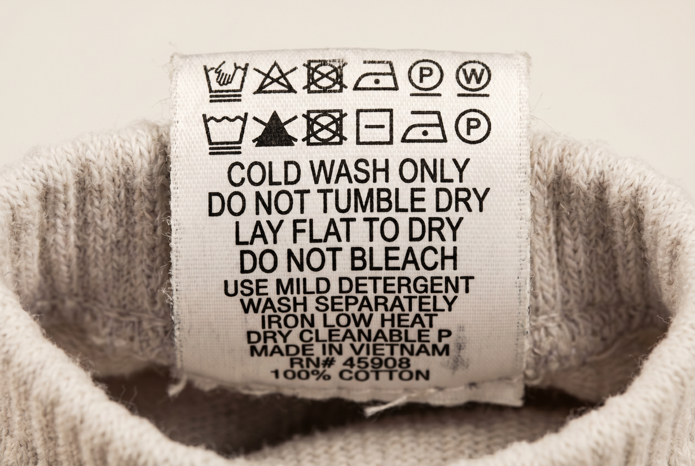
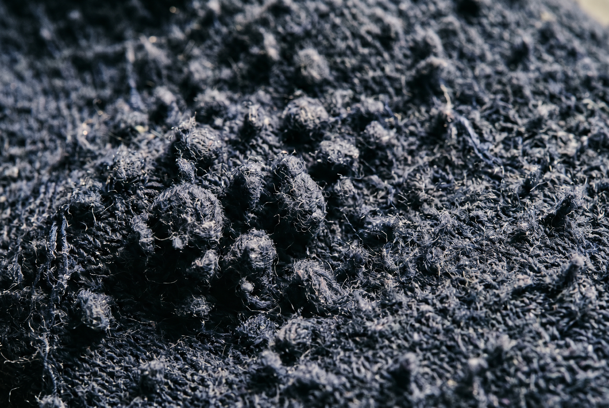

Consumer Guide · Men's Socks
The problem isn't the brand. It isn't the wash cycle. It's the fiber — and the industry has known this for decades.
It happens somewhere around early afternoon.
You shift your foot inside your shoe and feel it — a small fold of fabric bunched under your arch.
You can't fix it without stopping.
You push through, adjust at the next bathroom break, and forget about it until tomorrow when it happens again.
Most men chalk this up to bad luck.
They buy another pack.
The next pack does the same thing.
By month three there's a hole at the heel on three of the six pairs.
They assume it's the brand, switch brands, and the cycle starts again.
It is not the brand.
It is not bad luck.
It is the fiber.
Pure cotton is in the overwhelming majority of men's dress and everyday socks.
It has built-in weaknesses that make every one of these failures predictable.
The bunching, the dampness, the early holes — none of these are random.
The fiber was never built to handle what feet put it through.
The failures follow.
A cotton sock looks like a sock.
It feels like a sock on the morning you first put it on.
But by hour four of a workday, inside a closed shoe, the limits of the fiber are running on schedule.
Most men never learn this because the industry doesn't advertise it.
They sell "premium cotton" and "breathable fabric" and "comfortable fit" — all of which are accurate for the first three hours and misleading after that.
Here are the 5 reasons 100% cotton socks are designed to fail you.

Cotton is a pull fiber.
When you stretch it, it moves.
When you stop, it doesn't fully come back.
Every step you take pulls the sock slightly forward on your foot.
By mid-morning, the heel is already riding a few millimeters toward your arch.
By afternoon, the sock has migrated down the foot entirely.
You feel it as bunching under the arch or a heel that's sitting halfway out of the cup.
This isn't a sizing problem.
It isn't a wash problem.
Cotton fibers have almost no elastic memory — the ability to spring back to their original shape.
Polyamide does.
Elastane does.
Without those fibers woven in, there is no recovery.
The sock goes where it goes and stays there.
In the next reason: what happens to the moisture that builds up while the sock is migrating.

By mid-afternoon, a foot inside a cotton sock doesn't feel the way it did at 9am.
It feels heavier.
Slightly damp.
That mild discomfort is the sock doing exactly what it was designed to do — absorbing.
A cotton fiber is hollow at its core.
That hollow structure is why cotton is soft.
It's also why it holds moisture instead of releasing it.
When your foot sweats — which it does, even in winter, even in dress shoes — the cotton absorbs it.
In an open sandal, that moisture evaporates.
In a closed leather shoe, it has nowhere to go.
By hour three, the sock is carrying the sweat your foot produced in the morning.
By hour five, the fiber is saturated.
The foot that felt fresh at 9am is sitting in what it sweated out by lunchtime.
The odor that builds up isn't poor hygiene.
It's the predictable result of a fiber that absorbs without releasing.
Synthetic fiber wicks.
Cotton holds.
The words "breathable cotton" on a sock package are true for the first two hours.
After that, physics takes over.
What cotton does to the parts of your foot that move the most is coming next.

Your foot is not a uniform surface.
The heel strikes the ground with significant force on every step.
The toe box bends and flexes with every push-off.
The arch bears weight differently than either end.
A standard cotton sock puts the same thread count and the same weave density everywhere.
One material.
One construction.
Distributed evenly across a foot that has completely different demands in three different zones.
The heel and toe take the most friction — roughly 8,000 contact events per day on the average workday.
The cotton wears through there first.
The arch might look fine.
The leg portion might look fine.
But the heel is gone by month two, and the rest of the sock follows within the month.
This isn't bad luck.
The cotton construction was never mapped to the anatomy.
A sock designed for the foot would use different material density or reinforcement at the heel and toe.
Most mass-market cotton socks don't.
Next: what happens when you try to wash these socks the way you wash everything else.

Most cotton socks come with a care label that says "30°C max."
Some say cold wash only.
A few say lay flat to dry.
These aren't premium care instructions.
They're an admission.
Cotton shrinks when it gets hot because the fibers that were stretched during knitting contract back when heat is applied.
A sock that shrinks in the wash was already under tension before you ever wore it.
The fit you had on day one was borrowed.
After wash three, the heel cup is tighter.
After wash ten, the toe box is shorter.
Men who wash their socks with their jeans at 40°C — which is most men — accelerate this.
The sock that fit in October is a noticeably different object in December.
Most people stop at the size change. Shrinkage goes deeper than that.
It changes the weave.
Compressed fibers mean a denser structure that holds more heat, stretches less, and degrades faster.
The sock that shrank isn't just smaller.
It's compromised throughout.
Last reason: what's happening to the fiber surface after each wash cycle — and why the sock that felt soft on day one feels different by month two.

Cotton fiber is made of short strands twisted together.
When a sock is new, those strands are smooth and tightly wound.
The surface feels soft.
After 15–20 wash cycles, the short fibers start to work loose.
They migrate to the surface.
The surface roughens.
The sock that felt comfortable in January has a slightly sandpaper quality by April.
Men often notice this as the difference between "new socks" and "old socks" — a vague sense that the material has changed without being able to name why.
The reason is fiber degradation.
Combed cotton removes the short fibers before knitting.
Most cotton socks don't use combed cotton.
They don't have to say so on the label.
"100% cotton" is accurate whether the cotton is combed or not.
The surface you felt on day one was the surface of fibers that hadn't been worn yet.
What you feel on day ninety is the real material — after the short fibers have surfaced and the weave has loosened.
This isn't normal wear.
A sock with synthetic reinforcement and combed cotton maintains its surface feel significantly longer because the fiber it's made of is built to hold its structure.
Most cotton socks aren't.
Every problem described above has the same root.
A fiber built to absorb instead of release.
A fiber with no elastic recovery.
A fiber that distributes one construction across a foot that needs three.
The solution isn't finding a premium cotton brand.
It isn't washing at a lower temperature.
It's changing the formula.
Textile engineers discovered decades ago that feet require a specific blend to perform over time.
They call it different things.
In performance gear, the principle is standard: you don't build a running shoe sole out of one material, and you don't build a sock out of one fiber.
The ratio that has proven most durable for everyday wear is a specific combination of combed cotton, polyamide, and elastane.
Not equal thirds.
Not a marketing blend.
A specific ratio where the cotton provides softness and breathability, the polyamide provides grip and durability at the heel and toe, and the elastane provides the elastic memory that cotton doesn't have.
78% combed cotton / 20% polyamide / 2% elastane
Cotton provides comfort. Polyamide provides structure and durability. Elastane provides recovery. The ratio isn't arbitrary — it's the balance point where each fiber does its job without compromising the others.
Every failure described above — the migration, the dampness, the early holes, the shrinkage, the surface degradation — disappears when you change the fiber ratio.
The polyamide reinforces the heel and toe so they don't wear through by month two.
The elastane means the sock returns to its shape after every step.
The combed cotton (vs. standard cotton) means no short fibers working loose after 20 washes.
The result is a sock that performs the same on day one and day ninety.
Most men have never owned one.
The market is full of socks labeled "premium" and "long-lasting."
Most of them are still 100% cotton.
Before buying any sock, check these five things.
The label says "100% cotton" either way.
Combed cotton has the short, loose fibers removed before knitting — the fibers that work free and roughen the surface after 15–20 washes.
Standard cotton includes them.
If the label doesn't specify "combed cotton" or "gekämmte Baumwolle," assume it's standard.
Polyamide (sometimes listed as nylon) is the fiber that reinforces high-friction zones.
Without it, the heel and toe are made from the same material as the ankle — which means they fail first.
Elastane provides elastic recovery — the ability to spring back after stretching.
Without it, the sock migrates.
A small percentage goes a long way.
A sock that requires cold wash only is a sock that was built under material tension.
A well-blended sock can handle a normal laundry cycle.
Uniform construction across the entire sock means the high-wear zones get the same protection as the ankle.
They don't need the same protection.
They need more.
Five specific requirements.
Combed cotton.
A polyamide percentage in the right range.
Elastane for recovery.
Care instructions that work with a normal laundry cycle.
Reinforced construction at the heel and toe.
For most men, this checklist describes a sock they've never purchased — because they never knew what to look for.
The good news: socks built to this standard exist.
They're not common in supermarkets or budget multi-packs.
But they're available, and they're not significantly more expensive than the multi-packs that fail every three months.
A sock that lasts eighteen months costs less per wear than a sock that fails at month two.
The 78/20 Formula isn't exotic.
It's the standard that most socks don't meet.
No catch. No subscription. Ships from Europe in 1–3 days.